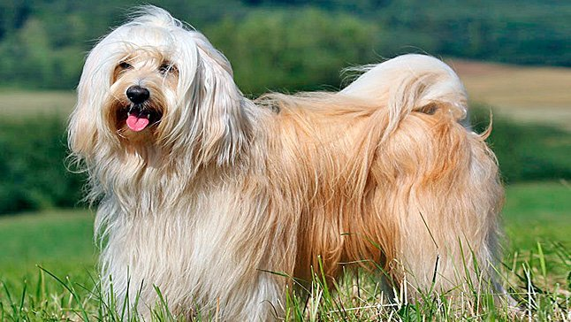

O nome da raça não condiz com a sua origem: o Terrier Tibetano não é um cão do tipo terrier, mas sim um cão pastor, que também trabalhava na proteção de comerciantes da região do Tibete, na China. Ele recebeu esse nome por causa do seu tamanho, mas não compartilha das mesmas características dos terriers. Graças às suas origens, o Tibetano é um cachorro companheiro, leal e extremamente protetor.
Carinhoso, sensível e leal, o Terrier Tibetano é muito gentil e dedicado à sua família humana, mas pode ser um pouco tímido na presença de pessoas estranhas. Os filhotes são extremamente ativos animados, mas o ânimo tende a diminuir quando atingem a fase adulta. Esses cachorros são exímios cães de guarda e fazem de tudo para proteger o lar. Eles não curtem a ideia de passar longos períodos sozinhos, preferindo a companhia dos seus humanos. Assim como todos os cães, a raça precisa ser socializada precocemente, isto é, ser exposta a pessoas, ambientes, sons e situações diferentes ainda na infância.
Dócil e gentil, o Terrier Tibetano é um cachorro incrível para se ter junto à família. Especialmente carinhoso com crianças, ele gosta de brincar, correr e passear, e não dispensa sessões de carinho e atenção. Ao mesmo tempo, é muito atento e está em constante estado de alerta para proteger a família de qualquer perigo. Não necessariamente ele irá atacar, e seu porte e força física não são exatamente condizentes com um cão de guarda, mas ele vai alertar que algo não está bem para que seja possível fazer alguma coisa. Desconfiado de estranhos e até reservado, o Terrier Tibetano precisa de uma boa socialização desde filhote para conseguir crescer tranquilo, calmo e relaxado, de acordo com a tendência natural da raça. Muito apegado aos tutores, o Terrier Tibetano não é um cachorro feito para ficar sozinho por longos períodos. Além disso desencadear um comportamento destrutivo, ele irá ficar triste, deprimido e até doente.
Fizemos um gráfico nivelando de 0 a 5 as características da raça, veja a baixo!
A pelagem do Terrier Tibetano é dupla, com pelos finos que podem ser ondulados ou retos, cobertos com uma camada de pelos longos, densos e possivelmente ondulados. Ela pode ser encontrada em qualquer cor, exceto chocolate ou fígado, mas as mais populares são branca, dourada, cinza, creme, preta particolor e tricolor. Os longos pelos da raça requerem bons cuidados: eles precisam ser escovados diariamente para que não se emaranhem. Os banhos devem ser dados apenas quando houver necessidade.
O Terrier Tibetano é conhecido por sua alta adaptabilidade, podendo viver em ambientes pequenos ou espaços maiores. No entanto, é crucial exercitá-lo regularmente devido ao seu elevado nível de energia, evitando comportamentos destrutivos e fugas. Essa raça é apegada à família e não tolera bem a solidão, necessitando de companhia. Apesar de geralmente resistente, o Terrier Tibetano pode apresentar algumas complicações de saúde, incluindo atrofia progressiva da retina, luxação da lente, displasia do quadril, glaucoma e catarata.
Se você já teve experiências com filhotes de cachorro antes, mesmo que de outras raças, sabe que há uma série de preparativos necessários para receber um cãozinho da melhor maneira possível. Antes da chegada do filhote de Terrier Tibetano, você precisa organizar sua casa de maneira a deixar um cantinho separado para ele dormir, comer e fazer suas necessidades, sendo que esse último deve ser o mais afastado possível dos outros dois. Também é recomendado que o cão tenha um espaço para ficar, mesmo que acordado, até entender quais são as regras da casa e o que você espera dele.